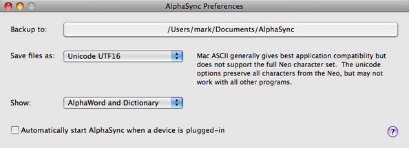

Preferences

The preference window can be opened from the AlphaSync menu.
Use the preference window to set the following:
- The folder used for quick backups
- The character encoding used when backing up or saving files to disk
- The items shown in the main window and which will be copied by a Quick Backup
- Automatic start-up of AlphaSync when a device is plugged in to your computer
Quick Backup will only back up the files that are displayed in the main window.
The character encoding affects the way that text is written to files on disk. The default is MAC ASCII,
which is a simple 8 bit encoding that handles most characters correctly and which will work with almost any
Mac application. However, some characters (such as greek sigma) may not be preserved when saving in this
format.
- Mac ASCII
- The plain text encoding historically used by the Mac (since before Mac OS X). Almost any application can
open Mac ASCII files, but some characters may not be correctly preserved.
- Plain ASCII
- Even older than Mac ASCII and the most compatible option. This will store basic alphabetic text, numbers and
punctuation only - any unusual symbols or accented characters or currency symbols will likely not be saved.
- Unicode UTF8
- Unicode format that is similar to Mac ASCII but which preserves all Neo character codes. Even though this is
a mainstream modern text format that is backwards compatible with ASCII, some Mac applications may be unable to
load some characters in this format.
- Unicode UTF8
- Unicode format that is similar to Mac ASCII but which preserves all Neo character codes. Even though this is
a mainstream modern text format that is backwards compatible with ASCII, many Mac applications seem unable to
load some characters in this format.
- Unicode UTF16
- Unicode format that preserves all Neo characters and which works well with MS Word, Pages and other editors.
Note that a good text editor, such as BBedit, will work correctly with any of
these text encoding options.
Changes to the preferences take effect immediately.
Copyright © 2009-2013 tSoniq.